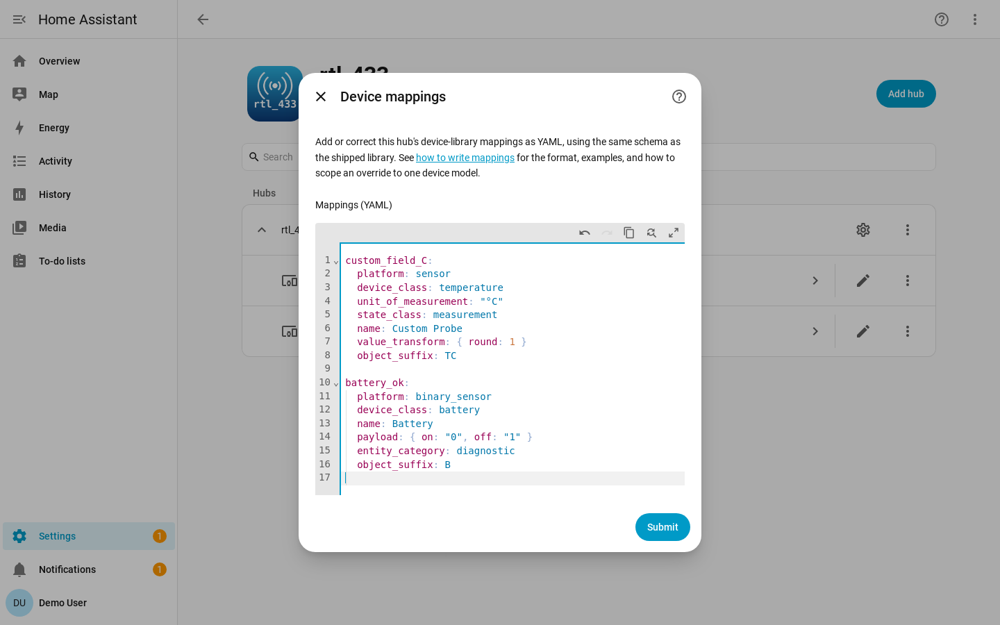

Device Mapping Library¶
The rtl_433 integration turns the JSON fields emitted by rtl_433 into Home Assistant entities using a data-driven device library: a set of YAML files that map each rtl_433 field name to a Home Assistant entity descriptor.
Use device mappings to add support for fields your rtl_433 hardware already reports, without editing the integration code or waiting for a new release. You can add mappings from the Home Assistant UI; contributors can also add mappings to the shipped library.
The shipped library is a faithful port of the curated
mappingstable andSKIP_KEYSfrom rtl_433's ownexamples/rtl_433_mqtt_hass.py. The mapping semantics (device class, unit, state class, value transform, unique-id suffix) are reused; the MQTT transport is discarded.
Adding device mappings¶
You can extend or correct the shipped library without editing the integration files directly from the Home Assistant UI:
Settings → Devices & Services → rtl_433 → Configure → Device mappings
The Device mappings step opens Home Assistant's built-in YAML editor pre-filled
with that hub's current mappings. You edit mappings as YAML, using the same
schema as the shipped library: top-level keys are rtl_433 field names, values
are entry mappings. They may optionally include a skip_keys: list to add extra
skip entries, and an optional models: block to
add or override model-scoped descriptors.
Mappings are stored per hub in that hub's config entry — each hub has its own independent set. The editor:
- Blocks invalid YAML syntax before you can submit.
- Validates the mapping schema on save and rejects bad input with a per-field error naming the offending field and the reason.
- Reloads the hub automatically.

To find fields your device reports that do not yet have entities, download
diagnostics for the hub from Settings → Devices & Services → the rtl_433
integration → ⋮ → Download diagnostics and inspect unmatched_field_keys. Each
key is either a candidate for a mapping or, if it is genuinely noise/identity
data, an entry for skip_keys:.
Comments and formatting are not preserved. The editor returns parsed YAML, so any comments or hand-formatting in what you paste are dropped once the mappings are stored. The mapping content is preserved exactly.
Mappings you add in the UI layer on top of the shipped library:
- A field present in both the UI mapping and the shipped library: the UI mapping wins (full entry replacement, not a deep merge), so you can correct a unit, device class, or transform.
- A field present only in the UI mapping: it is added as a new mapping.
skip_keysentries in the UI mapping are unioned with the shipped skip list.- A
models:block in the UI mapping is merged per(model, field_key): a UI model-scoped entry replaces the shipped one for the same model and field, while other shipped model fields are preserved. Per the precedence rules, a model-scoped entry (from either source) always beats a global one — so a shippedmodels:entry outranks a UI global entry for a matching model.
Paste a mapping like the following into the Device mappings editor. This
example adds an unmapped field and re-classifies battery_ok as a low-battery
binary problem sensor:
custom_field_C:
platform: sensor
device_class: temperature
unit_of_measurement: "°C"
state_class: measurement
name: Custom Probe
value_transform: { round: 1 }
object_suffix: TC
battery_ok:
platform: binary_sensor
device_class: battery # HA "battery": on == problem (low)
unit_of_measurement: null
state_class: null
name: Battery
payload: { on: "0", off: "1" } # battery_ok == 0 means low -> problem
entity_category: diagnostic
object_suffix: B
skip_keys: entries work in the editor exactly as in the shipped library, and so
do model-scoped mappings — the way to correct a mapping for one specific device
model rather than every device that emits the field. Nest the per-model
descriptors under a models: block keyed by the
exact rtl_433 model string; a model-scoped entry beats any global one for that
model (see precedence). For example, to rename
one model's temperature sensor and round it more finely than the global default,
leaving every other model untouched:
models:
Acurite-Tower: # exact rtl_433 model string
temperature_C:
platform: sensor
device_class: temperature
unit_of_measurement: "°C"
state_class: measurement
name: Outdoor temperature
value_transform: { round: 2 }
object_suffix: T
Mapping overrides are global or model-scoped only — they apply to every device of a model, not a single physical unit. To change settings for one specific unit (its availability timeout, meter calibration, or motion clear delay), use the options flow's Device settings step instead.
Mapping entry schema¶
Each library file is a YAML mapping whose top-level keys are rtl_433 field
names exactly as they appear in the JSON event (e.g. temperature_C,
wind_avg_km_h, battery_ok). Each value is an entry with the attributes
below.
temperature_C:
platform: sensor
device_class: temperature
unit_of_measurement: "°C"
state_class: measurement
name: null # HA names it "Temperature" from device_class
value_transform: { round: 1 }
object_suffix: T
Attributes¶
| Attribute | Required | Type | Meaning |
|---|---|---|---|
platform | yes | sensor | binary_sensor | event | Which Home Assistant platform creates the entity. See Event entities for event. |
device_class | yes (nullable) | string | null | Home Assistant device class (e.g. temperature, humidity, safety). Use null when the field has no appropriate device class. For event entries it is an EventDeviceClass (button, doorbell). |
unit_of_measurement | yes (nullable) | string | null | Unit shown by the entity. null for unitless or binary fields. |
state_class | yes (nullable) | measurement | total | total_increasing | null | Long-term-statistics class. null for binary fields and non-numeric sensors. |
name | no | string | null | Human-readable entity name (suffixed to the device name by HA). Omit it (or set null) to let Home Assistant derive a translated name from device_class. Only set an explicit name when it adds information the device class doesn't. |
object_suffix | yes | string | Short, stable token appended to the device key to form the entity's unique id. Must be stable — changing it orphans existing entities. |
value_transform | no | mapping | Declarative numeric transform applied before the value is stored. See Value transforms. Omit for binary fields. |
payload | no | { on: <raw>, off: <raw> } | For binary_sensor only: maps the raw rtl_433 value to the HA on/off state. See Binary payloads. |
event_map | no | { <raw-string>: <event-type> } | For event only: maps a stringified raw value to a named event_type; mapped types are declared up front in event_types. See Event entities. |
clear_delay | no | int (seconds) | For binary_sensor only: seconds after a detection to synthesize an off, for detect-only hardware that sends no off. Reschedules on each detection; per-device override via the options flow. See Motion / occupancy. |
force_update | no | bool | Mirrors upstream force_update; write state even when the value is unchanged. Defaults to false. |
entity_category | no | diagnostic | config | null | Categorizes the entity in the HA UI. Diagnostic fields (battery, signal, tamper) use diagnostic. |
enabled_by_default | no | bool | Set false to register the entity disabled (the user can enable it). Defaults to true. |
icon | no | string | Optional mdi: icon override. |
event_driven | no | bool | Marks a binary_sensor field as a state field that transmits only on a change, so the device has no periodic check-in. Defaults to false. Drives availability — see Availability classification. platform: event fields are always event-driven and do not need this flag. |
null is written explicitly (YAML null) rather than omitted for the three
"required (nullable)" attributes, so every entry is uniform and the loader never
has to guess intent. Optional attributes may simply be omitted.
Value transforms¶
value_transform declares how to convert the raw JSON value into the stored
state. It replaces the Jinja value_template strings used by the upstream MQTT
example. Supported keys (applied in this order):
| Key | Effect | Upstream template it replaces |
|---|---|---|
float |
Coerce to float. | {{ value\|float }} |
int |
Coerce to int. | {{ value\|int }} |
scale |
Multiply by the given number. | unit conversions, e.g. m/s → km/h (* 3.6) |
offset |
Add the given number (after scale). |
additive offsets |
round |
Round to N decimal places (the value of the key). | \|round(N) |
Keys combine. The application order is: coerce (float/int) → scale →
offset → round. Examples drawn from the shipped library:
| rtl_433 field | Upstream value_template |
value_transform |
|---|---|---|
temperature_C |
{{ value\|float\|round(1) }} |
{ round: 1 } |
humidity |
{{ value\|float }} |
{ float: true } |
lux |
{{ value\|int }} |
{ int: true } |
wind_avg_m_s |
{{ (float(value) * 3.6) \| round(2) }} |
{ scale: 3.6, round: 2 } |
battery_ok |
{{ ((float(value) * 99)\|round(0)) + 1 }} |
{ scale: 99, offset: 1, round: 0 } |
round implies float coercion, so { round: 1 } is equivalent to
{ float: true, round: 1 } and the shorter form is preferred.
Binary payloads¶
binary_sensor entries use payload instead of value_transform. It maps the
raw rtl_433 value to Home Assistant's on/off state:
detect_wet:
platform: binary_sensor
device_class: moisture
payload: { on: "1", off: "0" } # 1 == wet == on
Note the direction matters for some fields. The upstream closed field is
inverted — a value of 0 means the contact is open — so its payload is
{ on: "0", off: "1" }. Raw values are quoted strings to match how rtl_433
emits them.
battery_oknote. rtl_433'sbattery_okis boolean-ish (1= OK,0= low). The upstream example does not model it as a binary sensor; it converts it to a battery percentage sensor (0→ 1 %,1→ 100 %) so it displays on the standard HA battery card. The shipped library preserves that:battery_okis asensorwithdevice_class: battery,unit: "%", andvalue_transform: { scale: 99, offset: 1, round: 0 }. If you prefer a low-battery binary problem sensor, add a mapping in the Home Assistant UI.
Motion / occupancy¶
PIR / occupancy decoders (Interlogix, Risco Agility, Kerui, …) emit motion
only on detection (raw value 1) and never send an off — the hardware is
detect-only. So motion is a binary_sensor (device class occupancy) whose
payload declares only an on token; the off state is synthesized by a
timer rather than received:
motion:
platform: binary_sensor
device_class: occupancy
name: Motion
payload: { on: "1" } # detect-only: no off token
clear_delay: 90 # synthesize off 90 s after the last detection
object_suffix: motion
The clear_delay attribute (seconds) drives the synthesized off: the sensor
turns on on each detection and is auto-cleared to off after the delay elapses
with no re-detection. Every fresh detection reschedules the timer, so the
off window restarts on each retrigger. The shipped default is 90 s.
A stale on is never restored across a restart (there would be no live timer to
clear it): the sensor comes back off/unknown until the next detection.
Per-device override. The delay can be tuned per device in the options flow — Settings → Devices & Services → rtl_433 → Configure → (device step) exposes a Motion clear delay (seconds) field, shown only for motion-bearing devices. Leave it blank to use the 90 s default. The override is resolved at runtime (per-device value, else the descriptor default).
Availability classification¶
A device is marked unavailable when it falls silent past its availability timeout. RF devices signal presence only by transmitting, so the timeout is resolved per device: a per-device override, then an explicit hub default, then a device-class default derived from the device's known fields — both its adopted (persisted) fields and its latest payload, so an event-driven device that has been silent since a restart is still classified correctly before it next transmits (rather than briefly expiring its battery at the periodic default).
The class default has two outcomes:
- Event-driven → never-expire (the device, and all its entities including
battery, stay available once seen). These devices transmit only on a state
change — a door opening, motion, a button press — so any finite silence
timeout would eventually misfire and wrongly hide a healthy device. A field is
event-driven when it uses
platform: eventor setsevent_driven: true(e.g.motion,contact_open,reed_open,closed,alarm). The set is derived from the active library (shipped descriptors plus user mappings). - Periodic → a finite default (10 min). Everything else — temperature, humidity, power, etc. — which reports on a regular cadence.
Diagnostic fields such as battery_ok do not decide the class on their own. If a
device also has an event-driven field, the whole device uses the event-driven
default, so its battery and other entities stay available between events. An
explicit per-device or hub timeout always overrides the class default.
Because an event-driven device's availability no longer signals freshness, its per-device Last seen timestamp sensor is enabled by default (it ships disabled for periodic devices). It stays available once seen, so "no signal for N minutes" automations keep working.
Event entities¶
platform: event is for momentary, fire-and-forget RF fields — a remote
button, a doorbell press — that have no steady "on" / "off"
state to track. Each genuine transmission fires one Home Assistant
event, and the entity
stays available between presses (no faked "off"). Event entries live in their
own library file, device_library/events.yaml:
button:
platform: event
device_class: button # an EventDeviceClass
name: Button
object_suffix: button
How event entries differ from sensor / binary_sensor:
- By default the fired
event_typeis the stringified field value (str(value)). There is nopayloadand novalue_transform— the raw value is stringified directly. - By default
event_typesare auto-populated, not declared. Each newly observed value is recorded as a valid type the first time it is seen and persisted per device, so after a restart the entity rebuilds knowing the types it has seen before. You never list them in the YAML. - A field whose value varies (a remote that reports which button was pressed) auto-populates several types; a field that only ever emits one distinct value fires that one type on every transmission.
- The fired event carries no extra attributes — the type is the only payload.
device_classis anEventDeviceClass(button,doorbell).
event_map: naming raw values¶
The optional event_map attribute overrides the default stringified behavior:
it maps a stringified raw value → named event_type. When present:
- A transmission whose raw value is in the map fires the mapped type;
values not in the map still pass through as
str(value). - The mapped types are declared up front in
event_types(in map order), rather than only appearing once observed — so adevice_triggerlists them even before the first press.
The doorbell is the shipped example. secret_knock is emitted on every
press: raw 0 is a regular single press and raw 1 is a "secret knock" (the
button pressed three times rapidly). It maps both onto Home Assistant's doorbell
standard:
secret_knock:
platform: event
device_class: doorbell
name: Doorbell
object_suffix: secret_knock
event_map:
"0": ring # DoorbellEventType.RING — the HA standard type
"1": secret_knock # custom type for the 3x-rapid "secret knock"
The shipped events.yaml has two examples:
| Field | device_class |
Notes |
|---|---|---|
button |
button |
Remote / key-fob button code; the value is the pressed code, so distinct presses auto-populate several types. |
secret_knock |
doorbell |
Honeywell ActivLink doorbell press; emitted on every press (0 regular → ring, 1 secret knock → secret_knock) via event_map. |
Model-scoped mappings (models:)¶
The top-level keys above are the global defaults: a temperature_C entry
applies to every device that emits temperature_C. Some fields, though, need
a different descriptor depending on the device model — most notably the
utility-meter consumption counters (consumption, consumption_data), whose
unit and scale are not carried in the RF signal and differ between meter
models. For those, a file may carry an optional top-level models: block
that overrides the global descriptor for one specific rtl_433 model string.
models: is keyed by the exact rtl_433 model value, and each model maps to a
table of field_key → descriptor using the same per-field attribute schema
as the global entries (platform, device_class, unit_of_measurement,
state_class, name, object_suffix, value_transform, …):
# top-level global defaults (unchanged) live here ...
temperature_C:
platform: sensor
device_class: temperature
unit_of_measurement: "°C"
state_class: measurement
name: Temperature
value_transform: { round: 1 }
object_suffix: T
# ... and an optional model-scoped block sits alongside them:
models:
Some-Model-Name: # an exact rtl_433 `model` string
consumption_data:
platform: sensor
device_class: energy
unit_of_measurement: kWh
state_class: total_increasing
name: Consumption
value_transform: { scale: 1 }
object_suffix: consumption
The models: block is additive and optional: every existing library file
parses exactly as before, and the flat top-level keys remain the global default.
It may appear in any library file (most naturally power_electrical.yaml) and in
UI mappings. models is a reserved top-level key —
the loader intercepts it, so you cannot have a field literally named models.
Lookup resolution order¶
When the integration builds an entity for a field on a device, it resolves the descriptor most-specific first:
- The model-scoped entry for
(model, field_key), if the device's model has amodels:block with that field. - Otherwise the global flat entry for
field_key. - Otherwise the field is unmapped → no entity.
So a models: entry only affects the model it names; every other model keeps the
global descriptor for that same field.
Precedence (specificity-first)¶
Combined with UI mappings and the per-device meter calibration (the options-flow Device settings step), the full precedence for a single field on a single device is, highest to lowest:
- Per-device calibration (commodity + base unit + scale, set in the options flow) — applies only to the consumption field(s) of the one calibrated device.
- Model-scoped entry — UI
models:entry, else shippedmodels:entry. - Global flat entry — UI flat key, else shipped flat key.
- Unmapped → no entity.
The rule is specificity-first: a model-scoped entry always beats a global one
regardless of source. In particular a shipped models: entry outranks a
UI global entry for a matching model. Within each tier the UI mapping beats
the shipped library. (This falls out naturally from the merge: the UI mapping
replaces the shipped entry within a tier, and the lookup checks the model tier
before the global tier.)
No speculative real-meter mappings ship. Because a meter's consumption unit/scale is not knowable from the signal, the shipped library does not carry a guessed
models:consumption mapping for any real model — a wrong scale would silently corrupt real Energy data. The example below is purely illustrative; for a real meter use the per-device calibration step in the options flow (see Utility-meter calibration) until a model's unit/scale is authoritatively known.
The skip-keys file¶
_skip_keys.yaml lists fields that must never produce an entity — device
identity (model, id, channel, subtype, type), message bookkeeping
(mic, mod, sequence_num, message_type, exception, raw_msg), and the
secondary radio-tuning fields (freq1, freq2, protocol). The primary
per-event freq is not skipped — it is mapped in misc.yaml to a
diagnostic Frequency sensor (disabled by default) alongside rssi, snr, and
noise, so the tuned frequency can be recorded when rtl_433 reports level data:
skip_keys:
- type
- model
- id
# ...
The loader checks a field against this list before attempting a mapping
lookup. Identity keys (model + id/channel/subtype) are consumed by the
event normalizer to derive the device key, which is why they are skipped here
rather than mapped to entities.
Contributing device mappings¶
The easiest way to add support for your own installation is to use Adding device mappings. If you want the mapping to ship with the integration for everyone, add it to the repository's device library and open a pull request.
Where the files live¶
custom_components/rtl_433/device_library/
├── _skip_keys.yaml # fields that never become entities
├── air_quality.yaml # pm2.5 / pm10 / co2
├── binary_states.yaml # contacts, tamper, alarm, door state
├── events.yaml # momentary RF: button, doorbell
├── humidity_moisture.yaml # humidity, moisture, leak, depth, WH51 soil AD/boost
├── light_uv.yaml # illuminance, UV
├── misc.yaml # battery %, timestamp, signal, lightning
├── power_electrical.yaml # power, energy, current, voltage, consumption
├── pressure.yaml # barometric pressure
├── rain.yaml # rain total / rate
├── temperature.yaml # temperature variants
└── wind.yaml # wind speed / gust / direction
The loader reads every *.yaml file in this directory at startup, merges all
entries into one lookup table keyed by field name, and reads _skip_keys.yaml
separately as the exclusion list. Grouping is purely organizational: put a new
field in whichever file fits its domain, or in misc.yaml if nothing
fits. UI mappings from Adding device mappings are
layered on top of the merged shipped library.
Files whose name starts with _ (currently only _skip_keys.yaml) are treated
specially by the loader and are not parsed as field-mapping tables.
Add-a-mapping workflow¶
- Find the field name. Watch your rtl_433 stream or download diagnostics
for the hub from Settings → Devices & Services → the rtl_433 integration →
⋮ → Download diagnostics. The diagnostics export lists unmapped fields your
hardware has sent in
unmatched_field_keys. Each key is either a candidate for a mapping or, if it is genuinely noise/identity data, an entry for_skip_keys.yaml. rtl_433 field names are case-sensitive and unit-suffixed (temperature_C, nottemperature). - Pick the file that matches the field's domain, or
misc.yaml. - Add an entry keyed by the exact field name, filling in the required attributes. Copy a similar existing entry as a template.
- For a numeric reading: choose
platform: sensor, the closest HA device class, the unit rtl_433 reports, astate_class(measurementfor instantaneous readings,total_increasingfor monotonic counters like rain or energy), and avalue_transform. - For a boolean: choose
platform: binary_sensor, a device class, and apayloadmapping. Leaveunit_of_measurement/state_classnull. - Choose a short, stable
object_suffixthat is unique among the fields a single device emits. - Validate the YAML:
python3 -c "import yaml,glob; [yaml.safe_load(open(f)) for f in glob.glob('custom_components/rtl_433/device_library/*.yaml')]; print('ok')" - Add a fixture/test if you are contributing upstream (see the project test
suite) and open a PR with a
feat:conventional commit.
Notes on fields that cannot be expressed declaratively¶
The upstream mappings table includes two device_automation entries —
channel and button — that publish MQTT device triggers (e.g.
button_short_release) rather than entities. These have no sensor /
binary_sensor equivalent in this schema:
channelis already a device-identity key and lives in_skip_keys.yaml.buttonis modelled as an event entity instead of an MQTT device trigger — seedevice_library/events.yaml.
Everything else from the upstream table is ported faithfully.